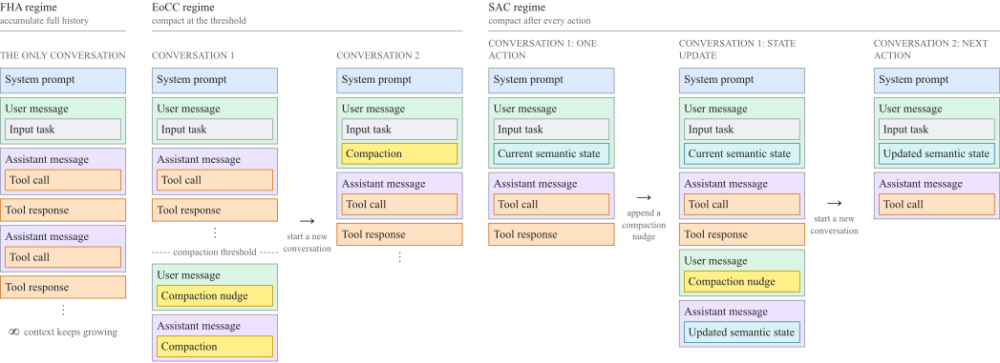

A detective on a long case does not carry every page of every interview into each meeting. They keep a one-page case summary, update it after each lead, and pull a specific file from the archive only when a detail is needed. The report shows frontier models can work the same way.
긴 사건을 맡은 형사는 모든 조서를 들고 회의에 들어가지 않는다. 한 장짜리 사건 요약을 들고 다니며 단서가 나올 때마다 고쳐 쓰고, 세부가 필요할 때만 보관함에서 특정 서류를 꺼낸다. 이 보고서는 최상위 모델도 같은 방식으로 일할 수 있음을 보인다.
How it works: three ways to manage context작동 방식은 맥락을 다루는 세 가지 방법
The study only changes what the harness shows the model, from the whole history to a single state plus one action.
이 연구는 하네스가 모델에게 보여 주는 것만 바꾼다. 전체 기록에서 시작해 상태 하나와 행동 하나까지 줄인다.

- Compact at a threshold.기준에서 압축.When the conversation passes a limit such as 18K tokens, the model writes a bounded summary and a fresh conversation resumes from it.대화가 18K 토큰 같은 한도를 넘으면 모델이 길이가 정해진 요약을 쓰고, 새 대화가 그 요약에서 이어진다.
- Read inputs on demand.입력은 필요할 때 읽기.Long documents become files the agent reads with sed, awk, and head, which turns a long-input task into a long-horizon one.긴 문서는 파일로 두고 에이전트가 sed, awk, head로 읽게 해, 긴 입력 과제를 장기 과제로 바꾼다.
- One action per context.맥락당 행동 하나.Each conversation gets the task and current state, takes one action, writes an updated state, and is discarded.대화마다 과제와 현재 상태를 받아 행동 하나를 하고, 갱신된 상태를 쓴 뒤 버려진다.
Key point: context length is a cost multiplier핵심은 맥락 길이가 비용을 곱한다는 것
Cutting the context window from 256K to 16K yields 3.6–7× more decoded tokens per second on the same H100 node. That rivals what aggressive quantization or sparsity buys.
맥락 창을 256K에서 16K로 줄이면 같은 H100 노드에서 초당 디코딩 토큰이 3.6~7배 늘어난다. 이는 공격적인 양자화나 희소화로 얻는 이득과 맞먹는다.
Results: accuracy holds while live context collapses결과는 맥락이 줄어도 유지되는 정확도
With one action per context, the largest prompt any task ever needed drops from 130–200K tokens to 15–37K.
맥락당 행동 하나로 바꾸면, 과제가 한 번이라도 필요로 한 가장 큰 프롬프트가 13만~20만 토큰에서 1.5만~3.7만 토큰으로 줄어든다.
Accuracy barely moves: compaction at a threshold even beats full history in all four settings.
정확도는 거의 변하지 않는다. 기준 압축은 네 설정 모두에서 오히려 전체 기록 방식보다 높다.
| Model · task | Full | Best EoCC | SAC | Median peak |
|---|---|---|---|---|
| Opus 4.5 · SWE-V | 70.0 | 74.8 | 70.2 | 32 → 8 |
| Opus 4.5 · TB 2.1 | 47.2 | 52.8 | 51.8 | 27 → 9 |
| GPT 5.6 Sol · SWE-V | 84.4 | 88.8 | 82.4 | 18 → 7 |
| GPT 5.6 Sol · TB 2.1 | 87.6 | 88.8 | 84.3 | 17 → 8 |
For long-horizon agents, treat context like scarce memory: compact often, keep a short task state, and read long inputs on demand. The savings rival quantization or sparsity, and for strong models accuracy mostly holds.장기 과제 에이전트는 맥락을 귀한 메모리처럼 다루자. 자주 압축하고, 짧은 과제 상태를 유지하고, 긴 입력은 필요할 때 읽자. 절약 폭은 양자화나 희소화에 맞먹고, 강한 모델에서는 정확도도 대체로 유지된다.
The main results use two closed frontier models. Smaller quantized open models are less robust: Qwen 3 Coder Next falls from 53.0% to 3.6% on SWE-bench Verified at a 16K limit. Cost savings are estimated, and semantic state-space models are proposed, not trained.주요 결과는 비공개 최상위 모델 두 개에서 나왔다. 더 작은 양자화 공개 모델은 덜 견고해서, Qwen 3 Coder Next는 16K 한도에서 SWE-bench Verified가 53.0%에서 3.6%로 떨어진다. 비용 절감은 추정치이고, 의미 상태 공간 모델은 제안일 뿐 학습되지 않았다.